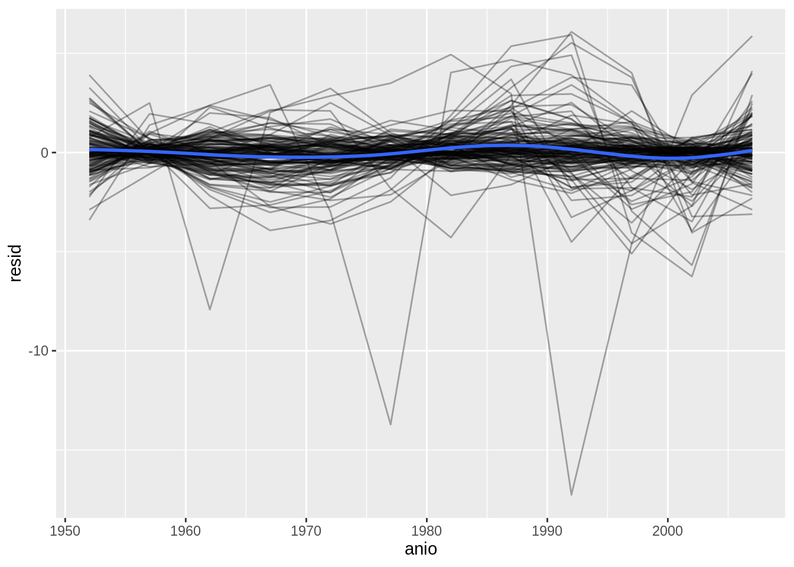
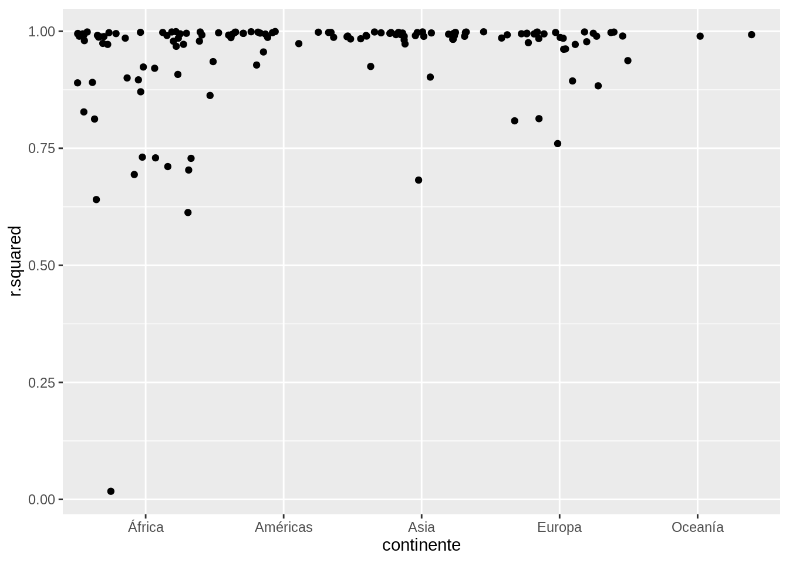
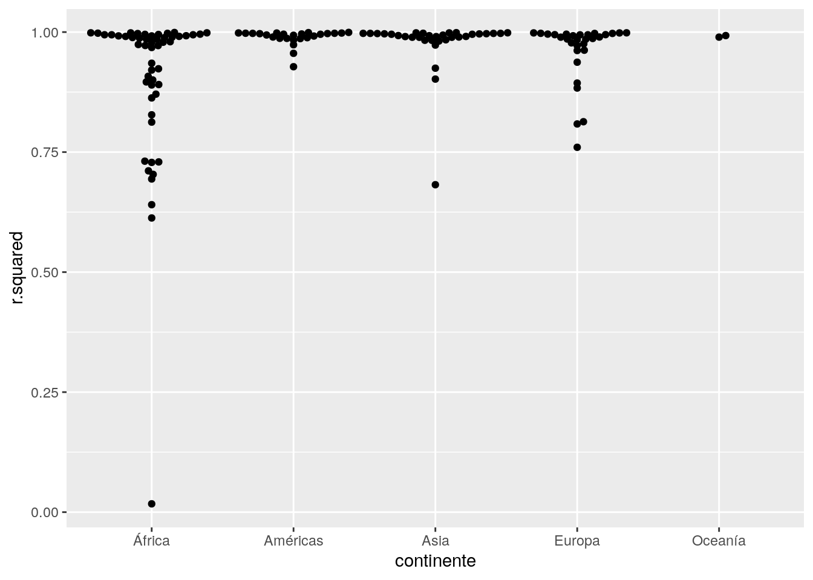
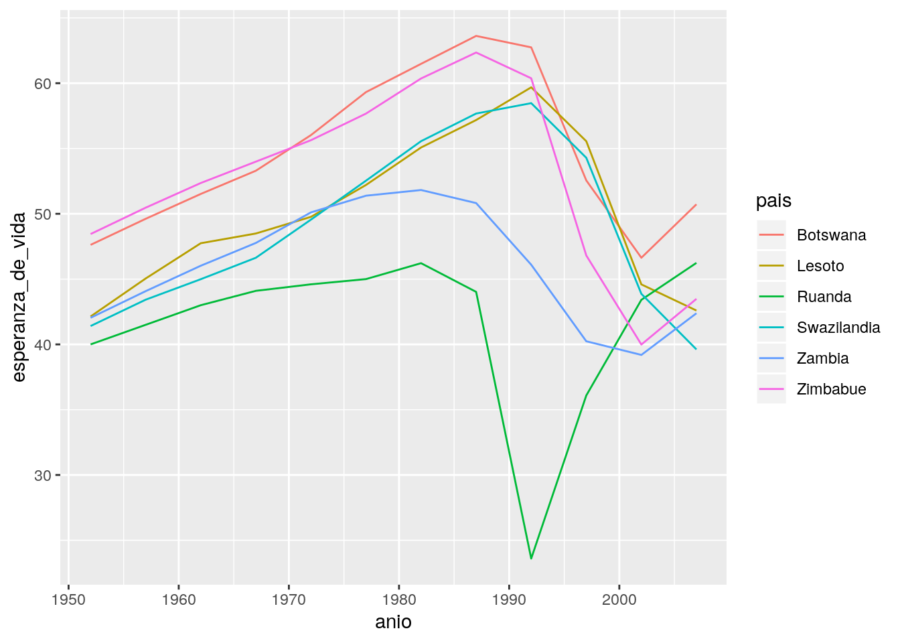

21 Muchos modelos
21.1 Paquetes necesarios
##
## Attaching package: 'dplyr'## The following objects are masked from 'package:stats':
##
## filter, lag## The following objects are masked from 'package:base':
##
## intersect, setdiff, setequal, union21.2 gapminder
21.2.1 Ejercicios
- Una tendencia lineal parece ser demasiado simple para la tendencia general.
¿Puedes hacerlo mejor con un polinomio cuadrático? ¿Cómo puedes interpretar
el coeficiente del término cuadrático? (Pista: puedes querer transformar
yearpara que tenga media cero.)
Solución
El siguiente código replica el análisis que se hizo en el libro pero cambia l
función modelo_pais() para incluir una regresión que incluye el año al
cuadrado.
modelo_pais_2 <- function(df) {
lm(esperanza_de_vida ~ poly(anio - median(anio), 2), data = df)
}
por_pais <- paises %>%
group_by(pais, continente) %>%
nest()
por_pais <- por_pais %>%
mutate(modelo = map(data, modelo_pais_2))## # A tibble: 142 x 5
## pais continente data modelo residuo
## <fct> <fct> <list> <list> <list>
## 1 Afganistán Asia <tibble [12 x 4]> <lm> <tibble [12 x 5]>
## 2 Albania Europa <tibble [12 x 4]> <lm> <tibble [12 x 5]>
## 3 Argelia África <tibble [12 x 4]> <lm> <tibble [12 x 5]>
## 4 Angola África <tibble [12 x 4]> <lm> <tibble [12 x 5]>
## 5 Argentina Américas <tibble [12 x 4]> <lm> <tibble [12 x 5]>
## 6 Australia Oceanía <tibble [12 x 4]> <lm> <tibble [12 x 5]>
## 7 Austria Europa <tibble [12 x 4]> <lm> <tibble [12 x 5]>
## 8 Baréin Asia <tibble [12 x 4]> <lm> <tibble [12 x 5]>
## 9 Bangladesh Asia <tibble [12 x 4]> <lm> <tibble [12 x 5]>
## 10 Bélgica Europa <tibble [12 x 4]> <lm> <tibble [12 x 5]>
## # ... with 132 more rowsunnest(por_pais, residuo) %>%
ggplot(aes(anio, resid)) +
geom_line(aes(group = pais), alpha = 1 / 3) +
geom_smooth(se = FALSE)## `geom_smooth()` using method = 'gam' and formula 'y ~ s(x, bs = "cs")'
por_pais %>%
mutate(estadistica = map(modelo, broom::glance)) %>%
unnest(estadistica, .drop = TRUE) %>%
ggplot(aes(continente, r.squared)) +
geom_jitter(width = 0.5)
- Explora otros métodos para visualizar la distribución del \(R^2\) por continente. Puedes querer probar el paquete ggbeeswarm, que provee métodos similares para evitar superposiciones como jitter, pero usa métodos determinísticos.
Solución
El paquete gbeeswarm se usó en el capítulo de análisis exploratorio.
por_pais %>%
mutate(estadistica = map(modelo, broom::glance)) %>%
unnest(estadistica, .drop = TRUE) %>%
ggplot(aes(continente, r.squared)) +
geom_beeswarm()
- Para crear el último gráfico (mostrando los datos para los países con los
peores ajustes del modelo), precisamos dos pasos: creamos un data frame con
una fila por país y después hicimos un semi-join (del inglés semi juntar) (TODO: deberíamos aclarar algo?) al conjunto de datos original.
Es posible evitar este join si usamos
unnest()en lugar deunnest(.drop = TRUE). ¿Cómo?
Solución
paises %>%
group_by(pais, continente) %>%
nest() %>%
mutate(modelo = map(data, ~lm(esperanza_de_vida ~ anio, .))) %>%
mutate(estadistica = map(modelo, broom::glance)) %>%
unnest(estadistica) %>%
unnest(data) %>%
filter(r.squared < 0.25) %>%
ggplot(aes(anio, esperanza_de_vida)) +
geom_line(aes(color = pais))
21.3 Creando columnas-lista
21.3.1 Ejercicios
- Lista todas las funciones en las que puedas pensar que tomen como input un vector atómico y retornen una lista.
Solución
Muchas funciones del paquete stringr cumplen con el criterio.
## [[1]]
## [1] "The" "birch" "canoe" "slid" "on" "the" "smooth"
## [8] "planks."
##
## [[2]]
## [1] "Glue" "the" "sheet" "to" "the"
## [6] "dark" "blue" "background."
##
## [[3]]
## [1] "It's" "easy" "to" "tell" "the" "depth" "of" "a" "well."## [[1]]
## [,1]
## [1,] "a"
##
## [[2]]
## [,1]
##
## [[3]]
## [,1]
##
## [[4]]
## [,1]En el caso del paquete purrr, la función map() también cumple el criterio.
## [[1]]
## [1] 0.03793975
##
## [[2]]
## [1] 0.4284848 0.7328851
##
## [[3]]
## [1] 0.8370804 0.4975074 0.7335000- Piensa en funciones de resumen útiles que, como
quantile(), retornen múltiples valores.
Solución
Algunos ejemplos de funciones básicas de R que cumplen con el criterio.
## [1] 10.4 33.9## [1] 10.40 15.35 19.20 22.80 33.90## $stats
## [1] 10.40 15.35 19.20 22.80 33.90
##
## $n
## [1] 32
##
## $conf
## [1] 17.11916 21.28084
##
## $out
## numeric(0)- ¿Qué es lo que falta en el siguiente data frame? ¿Cómo
quantile()retorna eso que falta? ¿Por qué eso no es tan útil aquí?
## # A tibble: 15 x 2
## cilindros q
## <dbl> <dbl>
## 1 4 21.4
## 2 4 22.8
## 3 4 26
## 4 4 30.4
## 5 4 33.9
## 6 6 17.8
## 7 6 18.6
## 8 6 19.7
## 9 6 21
## 10 6 21.4
## 11 8 10.4
## 12 8 14.4
## 13 8 15.2
## 14 8 16.2
## 15 8 19.2Solución
No se muestran los cuartiles correspondientes. Esto se debe a que la función
quantile() entrega los valores 0%, 25%, 50%, 75%, 100% como nombres
del vector resultante y unnest() descarta los nombres del vector.
## 0% 25% 50% 75% 100%
## 10.400 15.425 19.200 22.800 33.900- ¿Qué hace este código? ¿Por qué podría ser útil?
Solución
Crea un cuadro de datos en el que cada fila corresponde a un valor unico de
cilindros y cada observación fuera de la primera columna es un vector.
La utilidad es que reune las observaciones para cada variable y las agrupa, lo que puede simplificar algunos análisis particulares en los que se quiera analizar todas las observaciones agrupando por número de cilindros.
21.4 Simplificando columnas-lista
21.4.1 Ejercicios
- ¿Por qué podría ser útil la función
lengths()para crear columnas de vectores atómicos a partir de columnas-lista?
Solución
La función lengths() entreg el largo de cada elemento en una lista.
Proporciona un atajo a map_int(x, length) y sapply(x, length).
Es útil para verificar si acaso los elementos de una columna de tipo lista son
todos del mismo largo. Otra posibilidad es calcular el máximo largo dentro de
la columna y así sabremos cuántas columnas debo crear para transformar en varias
columnas atómicas.
- Lista los tipos de vectores más comúnes que se encuentran en un data frame. ¿Qué hace que las listas sean diferentes?
Solución
Los tipos más comunes de vectores en un cuadro de datos son:
logicalnumericintegercharacterfactor
Todos estos tipos son atómicos. Las listas no son atómicas ya que pueden contener otras listas o vectores.